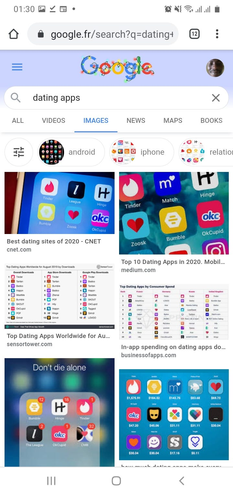

Dec 24, 2020
Ideas dating or matching
Dating apps were the following kind of apps that helped people connect way before social media became popular. Now connecting people is still a game worth playing because we are in the connection economy and in this type of economy the internet is the best tool because it is a connection engine. But what if ideas were the base medium of the connections that should be made. Connecting people with ideas is like doing dating. There should be lessons worth learning about the growth and success of a platform like match and tinder for who need to connect people with ideas.
Hey, please consider this Google algorithm coming in may 2021 because they will be changes in ranking and in revenues of businesses who use content marketing as a core traction channel.
If your business growth relies on a third party service or platform, you should always care about updates of this third player.
